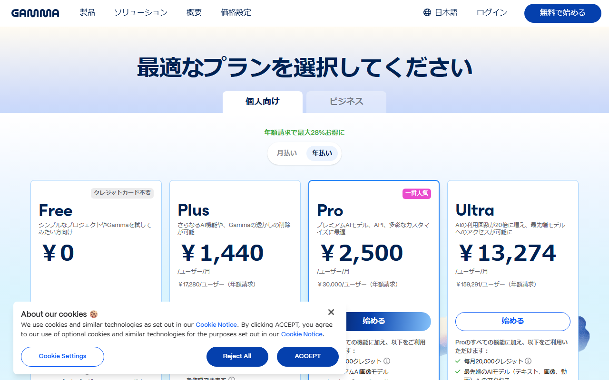
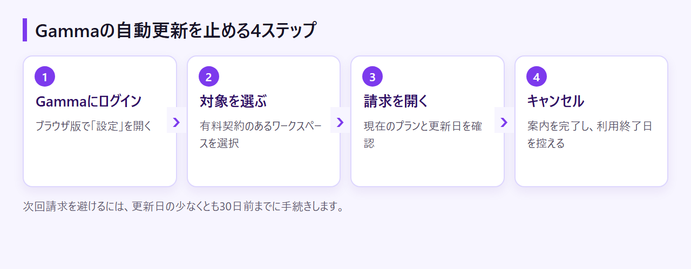
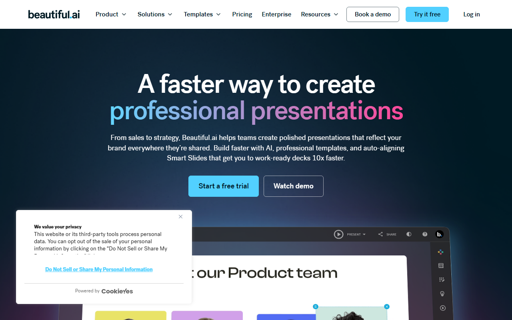

Gammaの解約方法｜自動更新を止める手順・返金条件・解約後のデータ
Gammaは、AIでプレゼン資料や文書を作成できるサービスです。次回課金を止める手順から返金条件、解約後のデータ、資料の保存まで順に説明します。
Gammaを解約する前に確認する6項目
- 解約経路：設定→ワークスペース→請求→キャンセル
- 手続き期限：更新日の少なくとも30日前
- 利用期限：現在の請求期間末まで
- 返金：キャンセルとは別に申請
- 保存：必要な資料と請求書
- 操作権限：対象ワークスペースの請求管理者
Freeと有料プランの違いを、日本円表示で見直せます。

Gammaの自動更新を止める手順
Gammaの設定から対象ワークスペースを選び、請求画面でキャンセルします。 最後に、自動更新が止まったことと、有料機能を利用できる最終日を確認します。
次回更新日と返金条件を確認する
次回請求を避けるには、更新日の少なくとも30日前までにキャンセルします。返金を求める場合は、解約とは別の申請が必要です。
対象のワークスペースで請求画面を開く
操作はブラウザ版のGammaで進めます。
- Gammaへログインする
- 左側メニューの「設定」を開く
- 有料契約のあるワークスペースを選ぶ
- 「請求」を開く
請求画面に現在のプランが表示されない場合は、別のワークスペースを選んでいないか見直します。
キャンセルを選んで画面の案内を完了する
請求画面でサブスクリプションのキャンセルを選びます。その後は、画面に表示される案内に沿って手続きを完了してください。
現在はStripe画面ではなく、Gammaの設定から進みます。請求書を取得する操作と混同しないようにしてください。

更新停止と利用終了日を確認する
手続き後は、自動更新が停止しているかを確かめます。有料機能を使える最終日も、あわせて控えておきます。
キャンセルした日が、即時の利用終了日になるわけではありません。現在の請求期間が終わるまでは、有料機能とクレジットを利用できます。
キャンセル後に移るFreeプランの機能と制限を確認できます。
Gammaを解約できないときに確認すること
キャンセル項目が見つからないときは、画面の状態から原因を切り分けます。 別の契約を誤って操作しないよう、まずワークスペースとメールアドレスを見直します。
有料プランのワークスペースと請求管理者を確認する
Gammaでは、契約状態がワークスペースごとに分かれます。有料契約のあるワークスペースを開き、請求管理者のアカウントで操作します。
Freeと表示されるなら別のワークスペースを確認する
有料のはずなのにFreeと表示される場合は、別のワークスペースを開いている可能性があります。ワークスペースを切り替え、契約中のプランが表示される場所を探してください。
契約時とは異なるメールアドレスでログインしていないかも見ます。複数の仕事用メールを使っている人は、請求メールの宛先と照合すれば、契約時のアカウントを判別しやすくなります。
Billingがないなら請求管理者へ依頼する
請求画面が表示されない場合は、一般メンバーとして参加している可能性があります。キャンセルは請求管理者に依頼してください。
管理者が分からなければ、Gammaを導入した担当者や経理担当者に尋ねます。アカウントを削除する前に、対象ワークスペースの請求画面で解約を完了してください。
ボタンがグレーなら権限と契約状態を見直す
キャンセルボタンを押せない場合は、請求管理者の権限があるかを見直します。すでにキャンセル済みで、次回更新が停止していないかも確認してください。
原因を推測して操作を繰り返すより、対象ワークスペース、ログイン中のメールアドレス、現在の契約表示をそろえてサポートへ伝えるほうが確実です。ただし、問い合わせ窓口が日本語で回答するかは公式に明記されていません。
Gammaの返金条件と申請方法
Gammaの解約と返金は別の手続きです。 キャンセルだけでは返金されません。返金を申請できるのは、期限とクレジット使用量の両方の条件を満たす場合です。
返金は加入後の期限とクレジット使用量で決まる
2025年12月1日以降の返金条件は、加入から3日以内の申請です。月払いと年払いのどちらにも同じ期限が適用されます。
さらに、使用したクレジットが次の上限未満であることが条件です。
- Plus：200クレジット未満
- Pro：600クレジット未満
- Team：900クレジット未満
- Business：1,000クレジット未満
- Ultra：2,000クレジット未満
解約しただけでは返金されない
加入から3日以内にキャンセルしても、自動では返金されません。カスタマーサポートへ、返金を別途申請する必要があります。
申請時は、契約したメールアドレスと対象ワークスペースを用意します。プラン名と請求内容も伝えられるようにしておきます。問い合わせ窓口の日本語対応は確認できないため、必要なら英語で要点を簡潔にまとめます。
条件を外れると原則として返金はない
加入から3日を超えた場合は、法令上必要な場合を除いて返金されません。期限内でも、プラン別のクレジット上限以上を使うと対象外です。
未使用期間の日割り返金があるとは案内されていません。更新直後に気づいた場合も、まず契約日と使用クレジット数を返金条件に照らし合わせ、それから申請します。
契約中のプラン名と、毎月付与されるクレジット数を照合できます。
解約後は請求期間末まで使え、その後Freeへ移る
キャンセルしても、現在の請求期間が終わるまでは有料機能を利用できます。 期間終了後は自動的にFreeへ移り、作成済みコンテンツへのアクセスは残ります。
キャンセル後も現在の請求期間までは有料機能を使える
解約直後に資料編集やAI生成が止まるわけではありません。現在の請求期間末までは、有料機能と残りのクレジットを使えます。
この期間に、資料の書き出し、共有先への連絡、請求書の保存を済ませます。アカウント削除は別の操作なので、保存が終わる前に進めないでください。
期間終了後はFreeへ移り、作成済み資料は残る
請求期間が終わると、自動的にFreeへ移行します。作成済みコンテンツには引き続きアクセス可能です。
Freeはクレジットカード不要で、登録時に400クレジットが付与されます。ただし、AIクレジットは毎月補充されません。継続してAI生成を使うなら、有料プランとの差を見直す必要があります。
付与クレジットと追加購入クレジットを分けて確認する
毎月プランに付与されるクレジットと、有料ユーザーが追加購入したクレジットは別物です。どちらの残高も一律に「すべて失効する」わけではありません。
プラン付与分は現在の請求期間末まで利用でき、Free移行後は400クレジットに戻ります。追加購入分はFree移行後も保持され、解約日から1年後に失効します。
解約前に資料と請求書を保存する
残したい資料は目的に合う形式で書き出し、請求書も手元へ保存します。 共有中のURLや独自ドメインがある場合は、移行後の案内も準備します。
残す資料と請求書を洗い出す
再編集する資料、経費処理に使う請求書、公開中のサイトを一通り見直します。保存形式を決め、URLが変わる相手への連絡も予定に入れます。
用途に合わせてPDF・PPTX・PNG・Googleスライドへ書き出す
- 閲覧・配布用：PDF
- PowerPointで編集：PPTX
- 画像として保存：PNG
- Googleスライドで編集：PPTXを書き出してアップロード
Freeを含む全プランで、PDF、PPTX、PNGへ書き出せます。FreeでPDFやPPTXを書き出すと「Made by Gamma」の表示が入ります。
PPTXやPDFは、Gamma上の表示と完全に一致しない場合があります。重要な資料は書き出したファイルを開き、文字、画像、改ページを確認してください。
有料プランでロゴを外せる範囲と、Freeへの移行条件を見直せます。
公開URLと独自ドメインの扱いを確認する
Freeでも、公開先として無料のgamma.siteサブドメインを使えます。一方、独自ドメインを接続できるのはPro以上です。
独自ドメインで公開中なら、有料期間中にgamma.siteへ切り替えるか、別の公開先へ移します。URLが変わる場合は、取引先や顧客へ先に伝えてください。
Stripeの請求履歴から請求書を保存する
設定のBillingから「Manage subscription in Stripe」へ進み、請求履歴を開きます。必要な請求書はPDFでダウンロード可能です。
発行済み請求書の記載事項は編集できません。日本の適格請求書に当たるかは確認できていないため、税務上の扱いは税理士に確認してください。
解約・ダウングレード・乗り換えの選び方
資料を残すだけならFree、AI生成を続けるなら下位プラン、制作環境を変えるなら乗り換えが候補です。 残したいものに合わせて選択肢を絞ります。
作成済み資料を残すだけならFreeへ戻る
Freeへ移っても、作成済みコンテンツにはアクセスできます。既存資料の保管や手作業での編集が中心なら、費用を止めてFreeへ戻す選択肢があります。
一方、Freeの400クレジットは登録時のみで、毎月は補充されません。新しい資料をAIで継続的に作る人は、残りクレジットだけで足りるかを考えます。
AI生成を続けるなら下位プランへの変更を検討する
利用量が減っただけなら、完全に解約せずPlusやProへ変更する方法もあります。Plusは年払いで月1,440円、月払いは月1,800円です。Proは年払いで月2,500円、月払いは月3,500円となります。
毎月付与されるクレジットは、Plusが1,000、Proが4,000です。必要量と支払額を比べてから、キャンセルかプラン変更かを決めてください。
Gammaを続ける場合の各プランと月間クレジットを比較できます。
乗り換えるならBeautiful.aiとCanvaも候補になる

Beautiful.aiは公式サイトと操作画面が英語で、常設の無料プランはありません。ProとTeamには14日間の無料トライアルがありますが、カード登録が必要です。
Gammaから書き出したPPTXを移す場合、PowerPointの入出力は有料プランが前提です。Proは年払いで月14.50ドル、約2,277円です。1ドル=157円換算（執筆時点の目安。為替で変動）。
英語の料金ページで、無料トライアルと有料プランの条件を確認できます。

Canvaは日本語UIに対応し、常設の無料プランがあります。無料版は5GBのクラウドストレージと、月ごとにリセットされるAI利用枠を備えています。
PPTXの読み込みと書き出しにも対応しています。Gammaから資料を移すときは、まず1件を読み込み、文字や画像の配置を確かめてから切り替えてください。
日本語の料金ページで、Freeと有料プランの違いを見比べられます。
Gammaの解約でよくある質問
複数の有料ワークスペースをまとめて解約できますか？ 契約状態はワークスペースごとに分かれています。料金をすべて止める場合は、各ワークスペースの請求画面で自動更新の状態を見直します。
解約とアカウント削除は同じですか？ 別の操作です。料金を止めるだけなら、請求画面でキャンセルしてFreeへ移ります。アカウントを削除する前に、解約と資料の保存を済ませてください。
まとめ：更新日と保存データを確認してから解約する
作成済みコンテンツを残して料金を止めるなら、キャンセルしてFreeへ戻ります。AI生成を続けるならPlusやProへ変更します。制作環境を変えるなら、先に資料を書き出してから乗り換えます。
解約前の最終チェック
Freeへ戻す場合は、更新日の少なくとも30日前までに請求画面でキャンセルします。独自ドメインを使っているサイト、資料、請求書の移行は、有料期間が終わる前に済ませてください。返金を求める場合は、キャンセルとは別に申請します。
現在のFreeと有料プランの違いを見直してから、解約やプラン変更へ進めます。